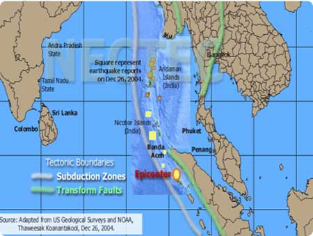

Tsunami (สึนามิ) เป็นคลื่นชนิดหนึ่งที่มีความยาวคลื่นค่อนข้างมาก และช่วงห่างระยะเวลาของแต่ละลูกคลื่นยาวนาน เกิดจากการเคลื่อนตัวของพื้นทะเลในแนวดิ่ง จมตัวลงในแนวรอยเลื่อน หรือการที่มวลของน้ำ ถูกกระตุ้นหรือรบกวน โดยการแทนที่ทางแนวดิ่งของมวลวัตถุ สึนามิสัมพันธ์กันกับการเกิดแผ่นดินไหว (earthquakes) แผ่นดินถล่ม (submarine landslides) หรือการระเบิดของภูเขาไฟใต้ทะเล (submarine volcanic eruptions) หรือแม้กระทั่งการกระทบของอนุภาคขนาดใหญ่ เช่น อุกกาบาต ซึ่งเหตุการณ์ทั้งหมดนี้ สามารถก่อให้เกิดคลื่นสึนามิได้ สึนามิ เป็นคำมาจากภาษาญี่ปุ่น ซึ่งแปลเป็นภาษาอังกฤษได้ว่า harbor wave หรือคลื่นที่เข้าสู่อ่าว ฝั่ง หรือ ท่าเรือ โดยที่คำว่า Tsu หมายถึง harbor แปลว่า อ่าว ฝั่ง หรือ ท่าเรือ ส่วนคำว่า Nami หมายถึง คลื่น เมื่อวันที่ 26 ธันวาคม 2547 ซึ่งมี epicenter ที่มหาสมุทรอินเดีย ทางตะวันตกของเกาะสุมาตราตอนเหนือ ในเวลา 07:58 (ประเทศไทย) ซึ่งมีความรุนแรงในระดับ 8.9 พร้อมกับ aftershock อีกหลายครั้ง ซึ่งมีความแรงในระดับ 6 ถึง 7 ในหลายพื้นที่ ต่อมา เวลาประมาณ 10:45 น. มีผู้รายงานว่าคลื่นขนาดความสูงไม่ต่ำกว่า 4-5 เมตร เข้าสู่ชายฝั่งของไทยและเกาะต่างๆในทะเลอันดามัน ส่งผลให้มีความสูญเสียทั้งชีวิตและทรัพย์สินจำนวนมาก โดยมีผู้รอดชีวิต วิ่งหนีเข้าฝั่งและขึ้นบนเนินที่สูงกว่าคลื่นได้ คลื่นยักษ์ใช้เวลาเดินทางมายังภูเก็ต ประมาณ 2 ชั่วโมง 45 นาที นับจากเวลาที่เกิดเหตุการณ์ครั้งแรก ซึ่งมีความสั่นสะเทีอนส่งไปถึงสถานีวัดต่างๆในสหรัฐอเมริกากว่า 30 สถานี ทำให้สามารถคำนวณได้อย่างแม่นยำ ว่าจุดเริ่มของเหตุการณ์ (epicenter) อยู่ ณ ที่ใด ทั้งนี้ สถานีวัดความสั่นสะเทือนในสหรัฐส่วนใหญ่ ได้บันทึกความเคลื่อนไหวที่เวลาประมาณ 08:20 (เวลาประเทศไทย) ส่วนด้านฝั่งตะวันตกของมหาสมุทรอินเดีย มีรายงานความเสียหายจากคลื่นยักษ์อย่างกว้างขวางตั้งแต่ศรีลังกา อินเดียตอนใต้ (รัฐทมิฬนาดู และอันตระประเทศ) ซึ่งมีความสูญเสียมากกว่าฝั่งประเทศไทยและมาเลเซีย ส่วนหมู่เกาะอันดามันและนิโคบาร์ ก็ได้รับรายงานว่ามีความสูญเสียอย่างมากเช่นเดียวกัน
๑. คลื่นสึนามิจากแผ่นดินไหว เป็นผลมาจากการเกิดแผ่นดินไหวในระดับที่รุนแรง คือ ตั้งแต่ ๘.๐ ขึ้นไปตามมาตราริกเตอร์ โดยมีจุดศูนย์กลางแผ่นดินไหวอยู่ใต้พื้นท้องมหาสมุทร หรือที่บริเวณใกล้ชายฝั่งทะเล ในทางธรณีวิทยาเราทราบแล้วว่า เปลือกโลกประกอบขึ้นด้วยแผ่นเปลือกโลก (tectonic plates) หลายๆ แผ่นเชื่อมต่อกัน เมื่อใดที่แผ่นเปลือกโลกเคลื่อนที่เข้าหากัน หรือแยกออกจากกันจะก่อให้เกิดแผ่นดินไหวขึ้น โดยความรุนแรงจากการสั่นสะเทือนของเปลือกโลกจะมีมากน้อยแตกต่างกันไปแต่ละคราว บริเวณที่เป็นแนวรอยต่อของแผ่นเปลือกโลกจึงมักเกิดแผ่นดินไหวขึ้นบ่อยครั้ง โดยเฉพาะอย่างยิ่ง ในบริเวณที่ขอบของแผ่นเปลือกโลกแผ่นหนึ่งเลื่อนตัวมุดลงไปใต้ขอบของแผ่นเปลือกโลกอีกแผ่นหนึ่ง จะทำให้เกิดแผ่นดินไหวที่รุนแรง และหากบริเวณนั้นอยู่ใต้ทะเล ก็จะทำให้เกิดคลื่นสึนามิขึ้นได้ ๒. คลื่นสึนามิไร้แผ่นดินไหว แบ่งย่อยออกเป็น ๒ ชนิด คือ ชนิดแรกเกิดจากปรากฏการณ์ตามธรรมชาติ และชนิดที่ ๒ เกิดจากการกระทำของมนุษย์ ก. ชนิดที่เกิดจากปรากฏการณ์ตามธรรมชาติ ปรากฏการณ์ตามธรรมชาติที่อาจก่อให้เกิดคลื่นสึนามิได้ มีดังนี้ การเกิดแผ่นดินถล่ม (landslides) ขนาดใหญ่ใกล้ชายฝั่งทะเล การปะทุอย่างรุนแรงของภูเขาไฟใต้ทะเลหรือบนเกาะในทะเล การพุ่งชนของอุกกาบาตลงบนพื้นน้ำในมหาสมุทร ข. ชนิดที่เกิดจากการกระทำของมนุษย์ ตัวอย่างการเกิดของคลื่นสึนามิที่ถือได้ว่ามีสาเหตุมาจากการกระทำของมนุษย์ คือ ปรากฏการณ์คลื่นขนาดใหญ่ ที่เคลื่อนตัวมาถึงชายฝั่งของประเทศฟิลิปปินส์ในเดือนกรกฎาคม พ.ศ. ๒๔๘๙ ทั้งๆ ที่มิได้เกิดแผ่นดินไหวมาก่อน แต่เป็นเพราะมีการทดลองระเบิดปรมาณูของสหรัฐอเมริกาที่เกาะบิกินี ในหมู่เกาะมาร์แชลล์ กลางมหาสมุทรแปซิฟิก เมื่อวันที่ ๑ และวันที่ ๒๙ ของเดือนนั้น ดังนั้นจึงเชื่อว่า ความสั่นสะเทือนของพื้นน้ำ ที่เกิดจากการทดลองระเบิดปรมาณู ก็อาจก่อให้เกิดคลื่นสึนามิขึ้นได้